Как сервера договариваются друг с другом: алгоритм распределённого консенсуса Raft
Когда кластеры достигают размеров в сотни, а иногда и тысячи машин, возникает вопрос о согласованности состояний серверов относительно друг друга. Алгоритм распределённого консенсуса Raft даёт самые строгие гарантии консистентности из возможных. В этой статье мы рассмотрим Raft с точки зрения инженера и постараемся ответить на вопросы «Как?» и «Почему?» он работает.
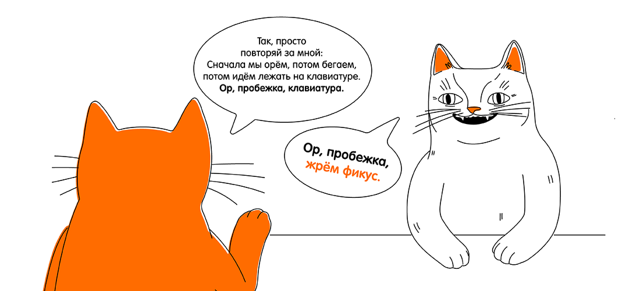
Raft является алгоритмом распределённого консенсуса, который нужен, чтобы несколько участников могли совместно решить, произошло ли событие или нет, и что за чем следовало.
Данные, обслуживаемые кластером Raft, представляют собой лог, состоящий из записей. Когда пользователь хочет изменить данные, хранящиеся в кластере, он пытается добавить в лог новую запись с командой:
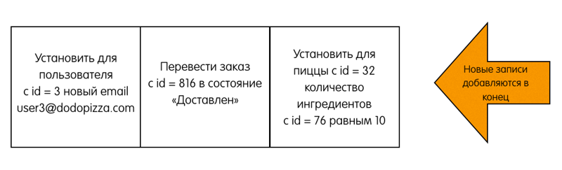
Эти команды выполняются распределёнными машинами состояний. Для простоты и наглядности в рамках данной статьи мы будем считать, что эти записи просто отдаются при чтении клиенту, который по происходившим событиям сам восстанавливает текущее состояние системы (см. Event sourcing).
Для обеспечения консенсуса в Raft сначала выбирается лидер, на котором будет лежать ответственность за управление распределённым логом. Лидер принимает запросы от клиентов и реплицирует их на остальные сервера в кластере. В случае выхода лидера из строя, в кластере будет выбран новый лидер. Это если коротенечко в трёх предложениях. Дальше будут подробности.
Основные понятия
- Состояния серверов. В кластере Raft каждый из серверов в каждый момент времени находится в одном из трёх состояний:
- Leader (лидер) – обрабатывает все клиентские запросы, является source of truth всех данных в логе, поддерживает лог фоловеров.
- Follower (фоловер) – пассивный сервер, который только «слушает» новые записи в лог от лидера и редиректит все входящие запросы от клиентов на лидера. По сути, является hot-standby репликой лидера.
- Candidate (кандидат) – специальное состояние сервера, возможное только во время выбора нового лидера.
Во время нормальной работы в кластере только один сервер является лидером, все остальные – его фоловеры.
Про асинхронщину
Здесь стоит отметить, что состояние – относительное понятие. Из-за того, что сервера коммуницируют асинхронно, разные сервера могут наблюдать переходы других серверов из одного состояния в другое в разное время.
- Raft делит время на отрезки произвольной длины, называемые сроками. Каждый срок имеет монотонно возрастающий номер. Срок начинается с выборов лидера, когда один или несколько серверов становятся кандидатами. В случае, если кандидат получает большинство голосов, он становится лидером до конца данного срока. Если же голоса разделились, и ни один из кандидатов не может получить большинство голосов, срабатывает таймаут, и этот срок заканчивается. После этого начинается новый срок с новыми кандидатами и выборами. Такая ситуация называется split vote. Пример проиллюстрирован сроком номер три на следующей диаграмме:
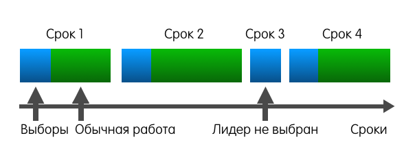
Номер срока служит в качестве логического timestamp в кластере Raft. Он помогает серверам определять, какая информация более актуальна на текущий момент.
Правила взаимодействия серверов и сроков
- Каждый сервер отслеживает номер своего текущего срока.
- Сервер включает номер своего срока в каждое отправляемое сообщение.
- Если сервер получает сообщение с меньшим номером срока, чем его собственный, то он игнорирует это сообщение.
- Если сервер получает сообщение с бо́льшим номером срока, чем его собственный, то он обновляет свой номер срока, чтобы тот соответствовал полученному.
- Если кандидат или лидер получает сообщение с бо́льшим номером срока, чем его собственный, то он понимает, что другие сервера уже инициировали новый срок, а его срок более неактуален. Поэтому он переходит из текущего состояния в состояние «фоловер» вдобавок к обновлению своего номера.
- Коммуникация серверов. Серверы в Raft взаимодействуют посредством обмена запросами и ответами. Базовый алгоритм использует всего-навсего два вида вызовов:
- RequestVote используется кандидатами во время выборов. Запрос содержит номер срока кандидата и метаданные о логе кандидата, более подробно рассмотренные далее. Ответ содержит номер срока отвечающего сервера и значение «true», если сервер голосует за кандидата; «false», если сервер голосует против кандидата.
- AppendEntries используется лидером для репликации лога, а также для механизма heartbeat. Запрос содержит номер срока лидера, коллекцию записей, которые нужно добавить в лог (или пустую коллекцию в случае heartbeat), некоторые метаданные о логе лидера, также подробнее рассмотренные далее. Ответ содержит номер срока фоловера и значение «true», если фоловер успешно добавил записи в свой лог; «false», если добавить записи в лог не удалось.
Алгоритм работы
1. Выбираем лидера
Для определения момента, когда пора начинать новые выборы, Raft полагается на heartbeat. Фоловер остаётся фоловером до тех пор, пока он получает сообщения от действующего лидера или кандидата. Лидер периодически рассылает всем остальным серверам heartbeat.
Если фоловер не будет получать никаких сообщений некоторое время, он вполне закономерно предположит, что лидер умер, а значит самое время брать инициативу в свои руки. В этот момент бывший фоловер инициирует выборы.
Для инициации выборов фоловер инкрементит свой номер срока, переходит в состояние «кандидат», голосует сам за себя и затем рассылает запрос «RequestVote» всем остальным серверам. После этого кандидат ждёт одного из трёх событий:
- Кандидат получает большинство голосов (включая свой) и побеждает в выборах. Каждый сервер голосует в каждом сроке лишь единожды, за первого достучавшегося кандидата (с некоторым исключением, рассмотренным далее), поэтому набрать в конкретном сроке большинство голосов может только один кандидат. Победивший сервер становится лидером, начинает рассылать heartbeat и обслуживать запросы клиентов к кластеру.
- Кандидат получает сообщение от уже действующего лидера текущего срока или от любого сервера более старшего срока. В этом случае кандидат понимает, что выборы, в которых он участвует, уже не актуальны. Ему не остаётся ничего, кроме как признать нового лидера/новый срок и перейти в состояние фоловер.
- Кандидат не получает за некоторый таймаут большинство голосов. Такое может произойти в случае, когда несколько фоловеров становятся кандидатами, и голоса разделяются среди них так, что ни один не получает большинства. В этом случае срок заканчивается без лидера, а кандидат сразу же начинает новые выборы на следующий срок.
2. Реплицируем логи
Когда лидер выбран, на него ложится ответственность за управление распределённым логом. Лидер принимает от клиентов запросы, содержащие некоторые команды. Лидер кладёт в свой лог новую запись, содержащую команду, а затем отсылает «AppendEntries» всем фоловерам, для того чтобы отреплицировать запись с новой записью.
Когда запись будет успешно разреплицирована на большинстве серверов, лидер начинает считать запись закоммиченой и отвечает клиенту. Лидер следит за тем, какая запись является последней. Он отправляет номер этой записи в AppendEntries (включая heartbeat), чтобы фоловеры могли закоммитить запись у себя.
В случае, если лидер не может достучаться до некоторых фоловеров, он будет ретраить AppendEntries до бесконечности. На следующей картинке показано, как организованы логи в кластере Raft:
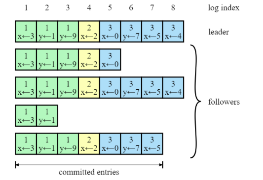
Каждый квадратик – одна запись в логе. Каждая запись хранит одну команду, например, x←3 присвоить значение 3 в ключ x. Запись также хранит номер срока, в котором она была порождена. На картинке это обозначается цифрой в верхней части квадрата. Цветовая индикация квадратов также означает номер срока. Каждая запись имеет порядковый номер (log index).
3. Гарантируем надёжность алгоритма
Пока из того, что мы рассмотрели, непонятно, каким образом Raft может давать хоть какие-то гарантии. Однако алгоритм предоставляет набор свойств, которые вместе гарантируют надёжность его исполнения:
- Election Safety: в рамках одного срока может быть выбрано не более одного лидера. Это свойство следует из того, что каждый сервер голосует в рамках каждого срока лишь единожды, а для становления лидера необходимо большинство голосов
- Leader Append-Only: лидер никогда не перезаписывает и не стирает, не двигает записи в своем логе, только дописывает новые записи. Это свойство следует напрямую из описания алгоритма – единственная операция, которую лидер может совершать со своим логом – дописывать записи в конец. И всё.
- Log Matching: если логи двух серверов содержат запись с одинаковым индексом и номером срока, то оба лога идентичны вплоть до данной записи включительно.
Доказательство с помощью математической индукции и картинок
Математическая индукция – это способ доказательства, когда первым шагом мы доказываем некоторое утверждение для простого случая. Вторым шагом мы принимаем утверждение истинным для некоторого случая X. Основываясь на этом, пытаемся доказать утверждение для некоторого соседнего случая X+1. Вместе эти два шага помогают доказать утверждение для всех случаев.
В нашей ситуации простой случай – пустые логи. Записей нет, поэтому и свойство нарушать нечему.
Теперь попробуем предположить, что в логах есть какие-то записи, соответствующие нашему свойству. В Raft есть механизм, который не даёт свойству нарушиться при любом изменении логов. Называется этот механизм Consistency check. Рассмотрим сразу на примерах.
Хороший пример. Есть лидер, допустим, 4-го срока, есть фоловер. У них обоих совпадающие логи из трёх записей.
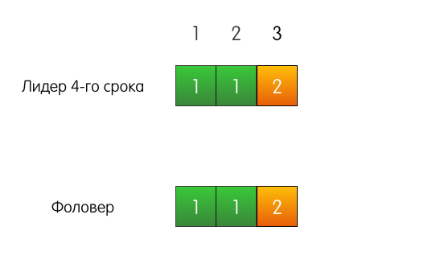
К лидеру приходит запрос от клиента, он добавляет запись в свой лог.
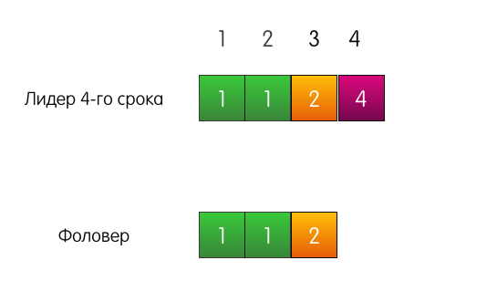
Лидер отправляет «AppendEntries» фоловеру. Но, помимо самой добавляемой записи, лидер также указывает в запросе, что запись необходимо добавить по индексу 4, а по индексу 3, перед ней, должна быть запись из срока 2.
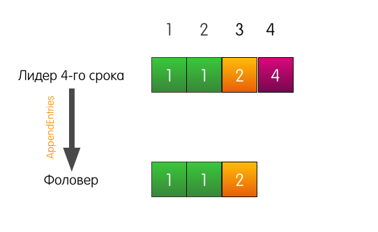
Запись в логе по индексу 3 в логе фоловера совпадает с указанной в запросе, поэтому фоловер добавляет запись в свой лог и отвечает лидеру успехом. Конец.
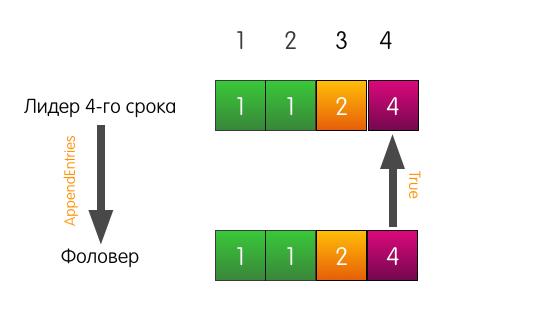
Тоже хороший пример, но с трагическим началом. Теперь лог фоловера отличается от лога текущего лидера.
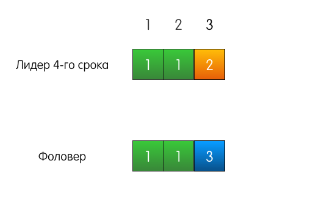
Когда лидеру придёт запрос на добавление записи в лог, он пошлёт такой же AppendEntries, как и в прошлом примере.
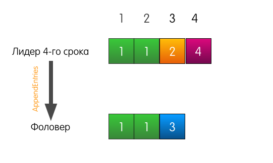
Однако в этот раз, поскольку у фоловера не совпадает предыдущая запись, фоловер отвечает неудачей.
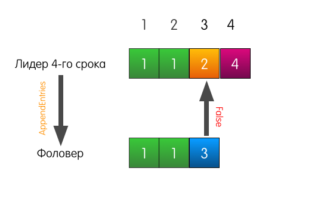
Что в этом случае делает лидер? Лидер просто откатывается немного назад и пытается скормить фоловеру ту запись, которую он сам считает стоящей по индексу 3. Он также включает в запрос предшествующую запись.
Теперь фоловер отвечает успехом и перезаписывает в своём логе записи, начиная с индекса 3.
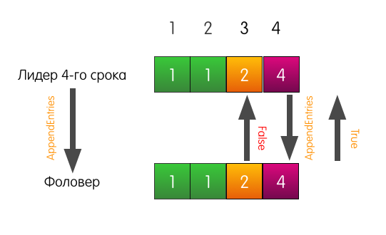
Лог фоловера может отличаться от лога лидера как угодно. В нём может не хватать записей, в нём могут быть лишние записи. В любом случае, consistency check гарантирует, что логи фоловеров рано или поздно будут совпадать с логом лидера.
- Leader Completeness: если запись в логе закоммичена в данный срок, то логи лидеров всех последующий сроков будут включать эту запись. Это свойство предоставляет нам гарантии durability.
Доказательство и картинки
Рассмотрим следующую ситуацию: три сервера в кластере. Сервер S1 — лидер текущего первого срока. Все серверы имеют по три записи в логе.
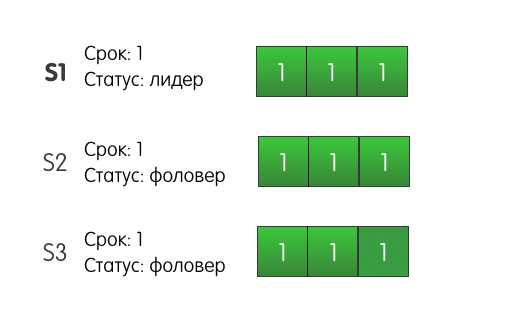
Лидер S1 получает запрос от клиента и добавляет в свой лог новую запись, отправляет AppendEntries другим серверам S2 и S3.
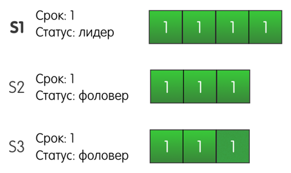
До S2 запись успешно доходит, но сеть между S1 и S3 моргает, и запрос теряется. Поскольку S1 знает, что запись присутствует на двух серверах из трёх, он может определить, что запись закоммичена, и ответить клиенту успехом.
S1 также будет ретраить добавление записи на S3 до тех пора, пока у него не получится. Но что будет, если с S1 произойдёт сбой и он отключится? Более того, что будет, если S3 первым надоест ждать, и он станет кандидатом? S2 за него проголосует, S3 станет лидером второго срока, и при следующем запросе на добавление записи, S3 перезапишет нашу закоммиченную запись?
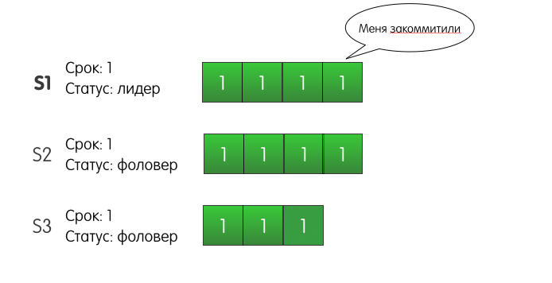
На самом же деле такая ситуация не может произойти в кластере Raft. Подвох здесь в том, что S2 не стал бы голосовать за S3. Почему? Потому что лог сервера S3 на момент голосования менее актуален, чем лог сервера S2. Этот механизм называется Election restriction – сервер будет голосовать за другой сервер, только если лог кандидата не менее актуален, чем лог голосующего.
Raft сравнивает актуальность логов по двум параметрам:
- Номер срока последней записи
- Длина лога
Эти два параметра кандидаты включают в запрос «RequestVote», чтобы фоловеры могли сравнить актуальность своего лога с логом кандидата.
«Главнее» тот лог, в котором старше срок последней записи.
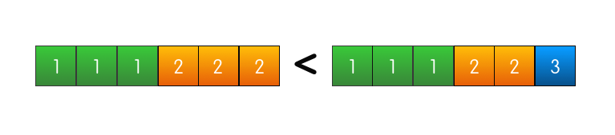
Если же номера срока последних записей совпадают, то «главнее» тот лог, который длиннее.
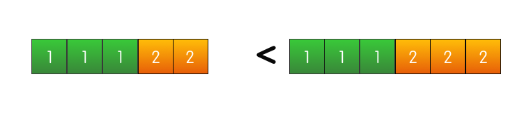
Если и то и другое совпадает, значит логи одинаково актуальны, а также, как следует из предыдущего свойства, абсолютно идентичны.

Получается что лог сервера, в котором есть закоммиченная запись, всегда будет актуальнее, чем лог, в котором её нет. И сервер, у которого есть закоммиченная запись, не будет голосовать за сервер, у которого её нет. А поскольку закоммиченная запись есть на большинстве серверов, то кандидат без этой записи не сможет получить большинства голосов и стать лидером, чтобы удалить эту самую запись с остальных серверов.
- State Machine Safety: это свойство в оригинале описывается в терминах распределённых машин состояний, в терминах нашей статьи это свойство можно описать так – когда сервер коммитит запись с некоторым индексом, ни один другой сервер не закоммитит по данному индексу другую запись.
Это свойство следует из прошлого. Если фоловер коммитит некоторую запись по индексу N, значит его лог идентичен логу лидера вплоть до N включительно. Leader completeness property гарантирует нам, что все последующие лидеры, будут также содержать эту закоммиченную запись по индексу N, а значит фоловеры, коммитящие в последующих сроках запись по индексу N, будут коммитить то же самое значение.
Ссылки на материалы для дальнейшего изучения